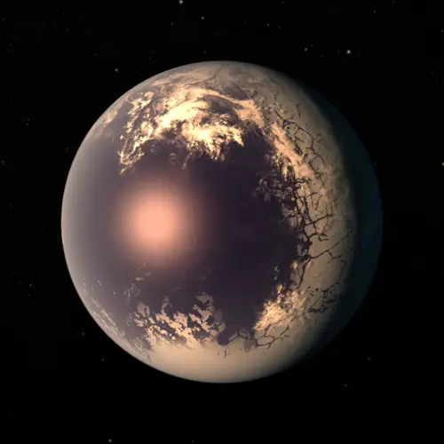

TRAPPIST‑1 f — Exoplaneta

Introdução e História
TRAPPIST‑1 f é um exoplaneta que faz parte do sistema TRAPPIST‑1, um dos sistemas planetários mais fascinantes já descobertos, com pelo menos sete planetas do tamanho da Terra orbitando uma estrela anã ultrafria a cerca de 40 anos‑luz de distância da Terra.
Ele foi detectado em 2017 por meio da técnica de trânsito, que observa pequenas quedas no brilho da estrela quando o planeta passa à sua frente.
Características Físicas: Massa, Raio e Órbita
TRAPPIST‑1 f tem um raio muito próximo ao da Terra (cerca de 1,045 R🜨) e sua massa estimada também é similar ou um pouco menor que a terrestre, sugerindo que ele pode ter uma composição rochosa.
Ele orbita sua estrela a cada aproximadamente 9,2 dias terrestres, muito mais rapidamente do que a Terra faz em torno do Sol, devido à proximidade à sua estrela anã.
A temperatura de equilíbrio estimada é de cerca de 219 K (≈ ‑54 °C), dependendo da reflectância e da atmosfera.
Potencial de Habitabilidade
- Zona Habitável: TRAPPIST‑1 f orbita na região onde, teoricamente, água líquida poderia existir na superfície sob condições atmosféricas adequadas.
- Composição Complexa: Estudos sugerem que este planeta pode ter uma grande quantidade de água em suas camadas internas, podendo ter uma atmosfera densa; isso pode influenciar a habitabilidade.
- Atmosfera Desconhecida: Ainda não há medições confirmadas de uma atmosfera semelhante à da Terra, portanto sua verdadeira habitabilidade permanece incerta.
Mesmo assim, TRAPPIST‑1 f continua sendo considerado um candidato interessante à habitabilidade em função de sua posição orbital e características físicas.
Curiosidades
O sistema TRAPPIST‑1 tem sete planetas do tamanho da Terra em órbita muito próxima de sua estrela, o que torna possível que um observador em TRAPPIST‑1 f veja outros planetas do sistema no céu noturno.
TRAPPIST‑1 f pode ser um planeta com forte presença de água e gelo dependendo de sua composição; alguns modelos sugerem grandes oceanos ou uma cobertura de vapor d’água.
Assim como outros planetas do sistema, TRAPPIST‑1 f provavelmente está em rotação síncrona, com um lado sempre voltado para sua estrela e o outro permanecendo no escuro.
Referências
- NASA. TRAPPIST-1 f — Exoplanet Exploration. Disponível em: https://science.nasa.gov/exoplanet-catalog/trappist-1-f/ . Acesso em: 26 dez. 2025.
- ESA. Imagining the surface of TRAPPIST-1 f. Disponível em: https://www.esa.int/ESA_Multimedia/Images/2022/03/Imagining_the_surface_of_TRAPPIST-1f . Acesso em: 26 dez. 2025.